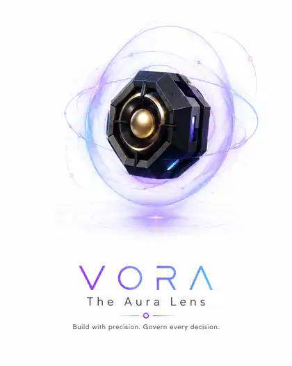

From objective to approved execution.
Describe the company you want. Cyvora researches top trends and proven operators, extracts the patterns that work, identifies the gaps they leave behind, and builds an original company structure that remains under founder control.

One objective becomes a governed operating company.
Cyvora is not a dashboard layered over disconnected agents. It is an operating system that moves founder intent through evidence, structure, authority, execution, validation, and durable history.
Cyvora starts with evidence, not a blank prompt.
The research layer is the sauce. Agents study demand, leading companies, pricing, workflows, distribution, customer language, and market gaps before the blueprint is produced.
Research and reverse engineering
Cyvora does not copy a company. It separates durable operating principles from surface-level branding, then adapts those principles into an original model for the founder's objective.
Autonomy remains inside a visible chain of authority.
Every consequential action must be attributable, policy-checked, approval-aware, cost-bounded, recoverable, and visible to the founder.
Founder authority
The founder approves consequential plans, external actions, and final acceptance.
Execution boundaries
Risk, connector, runtime, and spending policies are checked before work begins.
Operational evidence
Tasks, approvals, execution runs, outputs, validation, and events remain inspectable.
Safe failure handling
Leases, retries, blocking states, and recovery events prevent silent failure and duplicate work.
Start with one objective.
See Cyvora research the opportunity, produce the operating blueprint, request the right decisions, and carry one approved workflow through validated completion.